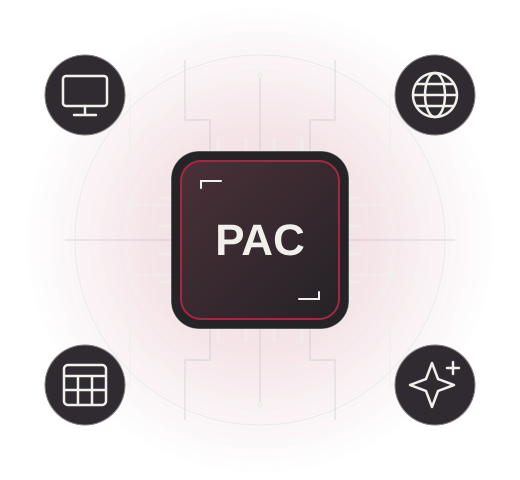

01
07 NOV
HARDWARE E PRIMEIROS PASSOS
Conheça o computador
Entenda as peças, explore a área de trabalho e organize seus primeiros arquivos
OFICINA DE INFORMÁTICA BÁSICA
Do primeiro contato às possibilidades da inteligência artificial. Aprenda no seu ritmo, experimente e leve esse conhecimento para o dia a dia.
Explorar as aulas ↗Aulas presenciais na Católica de Jaraguá do Sul

SEU CAMINHO DE APRENDIZAGEM
Escolha um encontro para ver o conteúdo
praticar e acessar a apresentação
HARDWARE E PRIMEIROS PASSOS
Entenda as peças, explore a área de trabalho e organize seus primeiros arquivos
NAVEGAÇÃO, PESQUISA E ATALHOS
Pratique pesquisas, compare informações e reconheça sinais de golpes
PLANILHAS E FERRAMENTAS DIGITAIS
Organize uma lista, experimente uma planilha e prepare uma postagem
INTELIGÊNCIA ARTIFICIAL NO COTIDIANO
Escreva pedidos claros e aprenda a avaliar as respostas recebidas
APRENDER FAZENDO
Selecione o encontro e veja as atividades para cada dia
AULA 01 | 07 NOV 2026
Reconhecer componentes e criar uma pasta com um documento salvo
Escolha um componente para descobrir sua função
Executa as instruções dos programas. É uma das peças envolvidas em processar informações e realizar tarefas
Mantém temporariamente informações que os programas estão usando. Seu conteúdo se perde ao desligar o computador
Guarda programas, arquivos e muito mais para serem usados depois, mesmo após desligar o computador
Conecta os componentes e permite a comunicação entre eles
Converte a energia elétrica para alimentar os componentes do computador
AULA 02 | 14 NOV 2026
Pesquisar, comparar fontes e usar recursos básicos do navegador
As duas fontes abaixo foram inventadas para este exercício. Não representam uma oferta real. Leia e compare.
Publicado em 10/11/2026. Encontro de leitura: sábado, às 14h, na Sala Azul.
Sem autoria e sem data. “O encontro mudou para domingo às 16h. Repasse para todo mundo!”
Leia a situação e escolha o que faria. Não é preciso abrir nenhum site nem informar dados.
Abra um editor de texto no computador para praticar. Esta AULA serve de guia.
| Teclas | Ação |
|---|---|
| Ctrl+C | Copiar o conteúdo selecionado |
| Ctrl+V | Colar o conteúdo copiado ou recortado |
| Ctrl+X | Recortar o conteúdo selecionado |
| Ctrl+Z | Desfazer uma alteração |
| Ctrl+A | Selecionar tudo no contexto ativo |
| Ctrl+F | Localizar um texto |
| Ctrl+S | Salvar em muitos programas; no navegador, salvar a página |
| Ctrl+P | Abrir impressão ou sua prévia |
| Alt+Tab | Alternar entre janelas no Windows |
| Ctrl+T | Abrir uma aba no navegador |
AULA 03 | 21 NOV 2026
Criar uma planilha simples e experimente a edição de um material visual
Simulação de uma lista de materiais. Altere as quantidades e observe os totais. Depois, refaça a tabela no Excel ou Sheets.
| Item | Quantidade | Preço por unidade | Total |
|---|---|---|---|
| Caderno | R$ 12,00 | Revise a quantidade | |
| Caneta | R$ 3,00 | Revise a quantidade | |
| Pasta | R$ 4,00 | Revise a quantidade |
Use quantidades inteiras de 0 a 100. Total de cada linha = quantidade × preço.
Total geral:
Preencha todas as quantidades com números inteiros entre 0 e 100 para calcular o total
Altere a quantidade dos itens. O que muda no total?
Leia o aviso e confira se as informações principais estão presentes. Depois crie sua versão no Canva ou em um editor disponível na aula.
Oficina: primeiros passos no computador
Data: 30 de novembro de 2026
Horário: 14h às 16h
Local: Sala de aprendizagem - Bloco B
Traga suas dúvidas. Vamos praticar juntos!
AULA 04 | 28 NOV 2026
Criar e melhorar um prompt, reconhecer limites e verificar o resultado.
Monte um exemplo de prompt selecionando as opções
Pedido copiado! Selecione o texto acima e use Ctrl+C
Os atalhos podem variar conforme o programa e o sistema.
Experimente, repita e consulte os passos sempre que precisar. Saber buscar ajuda também faz parte de aprender!